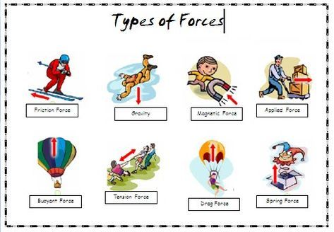
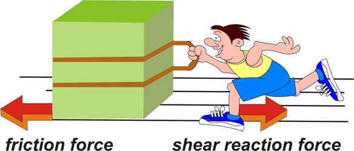
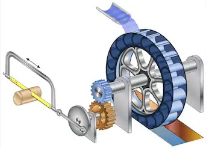
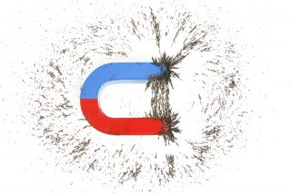
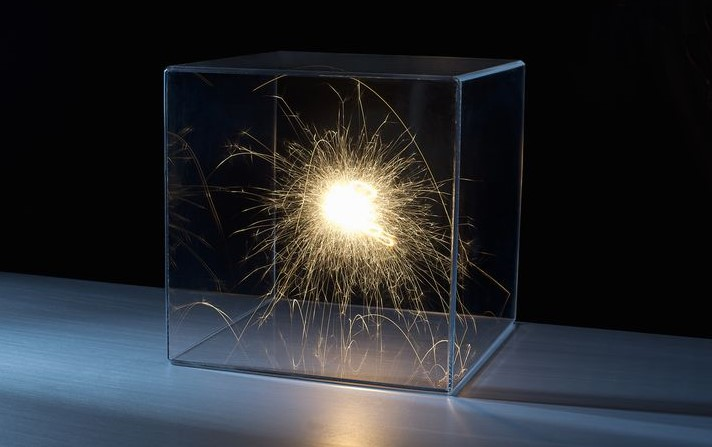
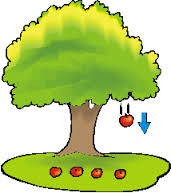

Force plays a great role in our life as it is helpful in doing any work. Like in playing cricket and basketball. We need force to play. Force is defined as a push or a pull or we can say force is a physical quantity that can change the speed, state, direction and dimension of an object. For example, when we put the force on the door it opens.
The changes that force can bring are written as follows:
Change in speed
If someone pushes your bicycle, it starts moving faster. In this case, the force that we apply on the bicycle changes the speed of the bicycle. Speed can be increased or decreased also.
Change in state of body
In this case, the body which is at rest can be put into motion or the body in motion goes in rest. For example: If a football placed on the ground is at rest, when you kick the football, it moves (comes in motion). We can also say that it changes the state of the body.
Change in dimension
Dimension means shape and size. When you blow a metal rod with a hammer, the dimension changes.
Change in direction
Force also leads to a change in direction. While playing cricket, the one who throws the ball, throws it in straight position with respect to the one who is doing batting. But the one who is batting hits the cricket ball in different direction.

There are two types of forces which are as follows:
1. Contact Force
2. Non-contact Force
1. Contact Force
Contact force is the force that acts only when two bodies are in physical contact or two bodies interact with each other.
Examples of Contact Force:
Muscular Force
Frictional Force
Mechanical Force
Muscular Force
It is the force exerted by the muscles. Like when we carry the purse or bag while moving, muscles play a great role. Muscular force is the force that is caused by action of muscles inside the body. It is also a contact force. Like we cannot push or pull the book kept on a table without touching it. Or bucket filled with water cannot hold without touch. For this, we need to apply force that will be exerted with hands. This means our muscles play a role.
Frictional Force

It is the force that opposes the motion of one body over the surface of another body. It is a contact force. We can say that in this force, one body tries to move on the surface of another body.
Mechanical force

It is the force exerted by any kind of machines and obviously it needs contact of another body due to which it is also called as contact force.
2. Non-Contact Force
It is the force that acts when bodies are not physically in contact with each other.
Examples of Non-Contact Force:
Magnetic force
Electrostatic force
Gravitational force
Magnetic force

It is the force exerted by magnets on iron objects. The force between magnet and iron is attractive type of force, which means it always attract toward each other and never repel each other. It is used in extracting scrap iron from garbage.
Electrostatic force

It is the force of attraction or repulsion exerted between charged particles. It can be either between same charges (repulsive, this means they repel each other) or between opposite charges (attractive, this means that they both attract each other).
Gravitational force

It is the force exerted by earth's gravity on all objects. It is always attractive in nature.